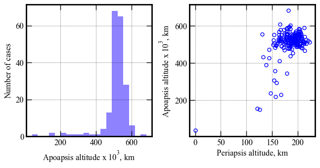
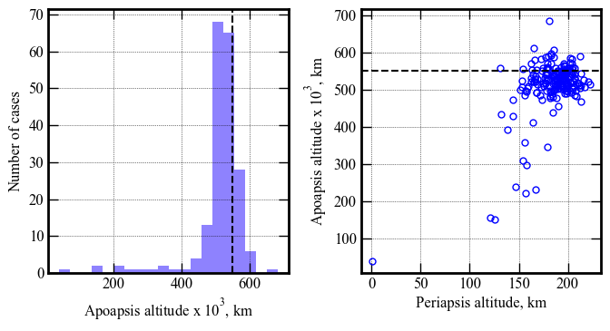
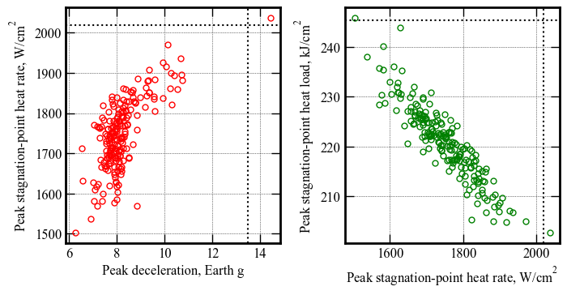
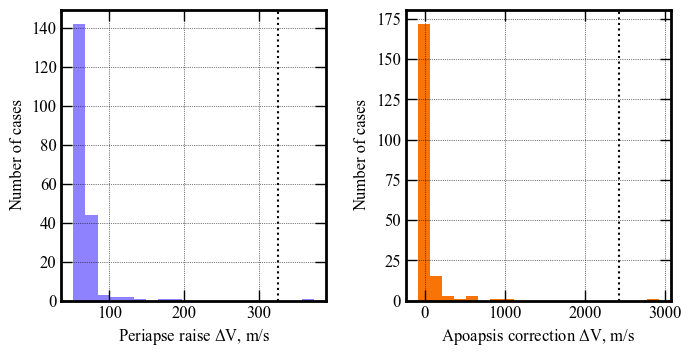

Section 08 - Performance Analysis - G - stress case¶
[1]:
from AMAT.planet import Planet
from AMAT.vehicle import Vehicle
[2]:
import numpy as np
import matplotlib.pyplot as plt
[3]:
planet = Planet('URANUS')
planet.loadAtmosphereModel('../../../atmdata/Uranus/uranus-gram-avg.dat', 0 , 1 ,2, 3, heightInKmFlag=True)
planet.h_skip = 1000.0E3
planet.h_low = 120e3
planet.h_trap = 100e3
[51]:
vehicle=Vehicle('Titania', 3200.0, 146 , 0.24, np.pi*4.5**2.0, 0.0, 1.125, planet)
vehicle.setInitialState(1000.0,-15.22,75.55,29.2877,88.687,-11.7 ,0.0,0.0)
vehicle.setSolverParams(1E-6)
# Set the guidance parameters described in the paper.
# See the function description for parameter details.
# Set max roll rate constraint to 30 deg/s
vehicle.setMaxRollRate(30.0)
# Set Ghdot = 83
# Set Gq = 9.0
# Set v_switch_kms = 16.0 :: this parameter is not really used, and should just be set to low value
# Set low_Alt_km = 120
# Set numPoints_lowAlt = 101
# Set hdot_threshold = -500 m/s
vehicle.setEquilibriumGlideParams(83.0, 9.0, 16.0, 120.0, 101, -500.0)
# Set target orbit parameters
# periapsis = 4000.0 km
# apoapsis = 550,000 km :: set slightly above target (500e3) to account for bias in targeting algorithm
# apoapsis tolerance = 10 km
vehicle.setTargetOrbitParams(4000.0, 550.0E3, 10.0E3)
[52]:
# Set path to atmfiles with randomly perturbed atmosphere files.
atmfiles = ['../../../atmdata/Uranus/perturbed/G-01.txt',
'../../../atmdata/Uranus/perturbed/G-02.txt',
'../../../atmdata/Uranus/perturbed/G-03.txt',
'../../../atmdata/Uranus/perturbed/G-04.txt',
'../../../atmdata/Uranus/perturbed/G-05.txt']
[53]:
vehicle.setupMonteCarloSimulation(1201, 200, atmfiles, 0, 1, 2, 3, 4, True, \
-11.70, 0.20, 0.20, 0.013, 0.5, 0.1, 2400.0, atmSigmaFactor=3)
Small run N = 200¶
[54]:
vehicle.runMonteCarlo2(200, '../../../data/acta-astronautica/uranus-orbiter-probe/MCBXG')
RUN #: 1, SAMPLE #: 158, EFPA: -11.54, SIGMA: 0.95, LD: 0.21, APO : 495590.70
RUN #: 2, SAMPLE #: 187, EFPA: -11.65, SIGMA: 0.38, LD: 0.20, APO : 539584.13
RUN #: 3, SAMPLE #: 188, EFPA: -11.89, SIGMA: 0.28, LD: 0.23, APO : 559438.81
RUN #: 4, SAMPLE #: 73, EFPA: -11.58, SIGMA: 3.28, LD: 0.19, APO : 504216.05
RUN #: 5, SAMPLE #: 151, EFPA: -11.56, SIGMA: 0.18, LD: 0.20, APO : 496675.43
RUN #: 6, SAMPLE #: 168, EFPA: -11.69, SIGMA: 0.41, LD: 0.20, APO : 525125.97
RUN #: 7, SAMPLE #: 36, EFPA: -11.58, SIGMA: -4.11, LD: 0.19, APO : 523289.29
RUN #: 8, SAMPLE #: 87, EFPA: -11.53, SIGMA: -2.32, LD: 0.19, APO : 508854.51
RUN #: 9, SAMPLE #: 139, EFPA: -11.70, SIGMA: 2.61, LD: 0.20, APO : 521176.33
RUN #: 10, SAMPLE #: 158, EFPA: -11.95, SIGMA: 4.11, LD: 0.19, APO : 231747.75
RUN #: 11, SAMPLE #: 97, EFPA: -11.74, SIGMA: -1.86, LD: 0.20, APO : 514018.31
RUN #: 12, SAMPLE #: 33, EFPA: -12.05, SIGMA: -0.22, LD: 0.21, APO : 295948.78
RUN #: 13, SAMPLE #: 151, EFPA: -11.77, SIGMA: -4.32, LD: 0.19, APO : 557280.20
RUN #: 14, SAMPLE #: 141, EFPA: -11.78, SIGMA: -4.24, LD: 0.21, APO : 499815.17
RUN #: 15, SAMPLE #: 30, EFPA: -11.58, SIGMA: -0.28, LD: 0.20, APO : 508579.50
RUN #: 16, SAMPLE #: 71, EFPA: -12.28, SIGMA: 5.31, LD: 0.19, APO : 38937.17
RUN #: 17, SAMPLE #: 79, EFPA: -12.02, SIGMA: -2.56, LD: 0.21, APO : 528821.08
RUN #: 18, SAMPLE #: 119, EFPA: -11.79, SIGMA: -3.24, LD: 0.20, APO : 505442.29
RUN #: 19, SAMPLE #: 39, EFPA: -11.33, SIGMA: -2.90, LD: 0.21, APO : 537005.68
RUN #: 20, SAMPLE #: 95, EFPA: -11.44, SIGMA: 1.60, LD: 0.20, APO : 548346.39
RUN #: 21, SAMPLE #: 108, EFPA: -11.51, SIGMA: -0.12, LD: 0.19, APO : 539591.90
RUN #: 22, SAMPLE #: 87, EFPA: -11.87, SIGMA: -1.50, LD: 0.23, APO : 555655.07
RUN #: 23, SAMPLE #: 161, EFPA: -11.50, SIGMA: -2.05, LD: 0.21, APO : 592820.75
RUN #: 24, SAMPLE #: 130, EFPA: -11.76, SIGMA: -2.80, LD: 0.19, APO : 581076.92
RUN #: 25, SAMPLE #: 97, EFPA: -11.76, SIGMA: 1.88, LD: 0.19, APO : 551256.52
RUN #: 26, SAMPLE #: 16, EFPA: -11.78, SIGMA: 1.56, LD: 0.19, APO : 502491.40
RUN #: 27, SAMPLE #: 150, EFPA: -11.51, SIGMA: -3.57, LD: 0.19, APO : 357739.72
RUN #: 28, SAMPLE #: 30, EFPA: -11.58, SIGMA: -2.83, LD: 0.21, APO : 514963.03
RUN #: 29, SAMPLE #: 75, EFPA: -11.75, SIGMA: 0.28, LD: 0.20, APO : 501785.12
RUN #: 30, SAMPLE #: 143, EFPA: -11.97, SIGMA: 0.94, LD: 0.20, APO : 517756.06
RUN #: 31, SAMPLE #: 132, EFPA: -11.54, SIGMA: -10.70, LD: 0.21, APO : -79495.70
RUN #: 32, SAMPLE #: 172, EFPA: -11.73, SIGMA: 2.76, LD: 0.20, APO : 485153.50
RUN #: 33, SAMPLE #: 126, EFPA: -11.83, SIGMA: 2.25, LD: 0.19, APO : 527489.03
RUN #: 34, SAMPLE #: 135, EFPA: -11.75, SIGMA: 1.95, LD: 0.21, APO : 525831.12
RUN #: 35, SAMPLE #: 69, EFPA: -11.49, SIGMA: 0.64, LD: 0.18, APO : 527838.21
RUN #: 36, SAMPLE #: 92, EFPA: -11.22, SIGMA: -2.42, LD: 0.20, APO : 488772.10
RUN #: 37, SAMPLE #: 148, EFPA: -11.61, SIGMA: -0.40, LD: 0.19, APO : 535871.04
RUN #: 38, SAMPLE #: 103, EFPA: -11.74, SIGMA: 4.36, LD: 0.20, APO : 501830.49
RUN #: 39, SAMPLE #: 9, EFPA: -11.73, SIGMA: -0.60, LD: 0.19, APO : 539959.75
RUN #: 40, SAMPLE #: 69, EFPA: -11.81, SIGMA: 0.48, LD: 0.23, APO : 509360.21
RUN #: 41, SAMPLE #: 7, EFPA: -11.90, SIGMA: -0.40, LD: 0.18, APO : 535772.39
RUN #: 42, SAMPLE #: 106, EFPA: -11.53, SIGMA: -1.90, LD: 0.20, APO : 540324.50
RUN #: 43, SAMPLE #: 39, EFPA: -11.35, SIGMA: 2.56, LD: 0.21, APO : 519010.20
RUN #: 44, SAMPLE #: 178, EFPA: -11.98, SIGMA: -0.93, LD: 0.19, APO : 491993.04
RUN #: 45, SAMPLE #: 102, EFPA: -11.44, SIGMA: -1.59, LD: 0.21, APO : 516987.99
RUN #: 46, SAMPLE #: 114, EFPA: -11.68, SIGMA: 0.03, LD: 0.21, APO : 547508.37
RUN #: 47, SAMPLE #: 152, EFPA: -11.71, SIGMA: 8.40, LD: 0.20, APO : 589376.81
RUN #: 48, SAMPLE #: 126, EFPA: -11.53, SIGMA: 4.56, LD: 0.19, APO : 520152.31
RUN #: 49, SAMPLE #: 102, EFPA: -11.89, SIGMA: -0.08, LD: 0.19, APO : 508871.15
RUN #: 50, SAMPLE #: 2, EFPA: -11.34, SIGMA: 2.97, LD: 0.19, APO : 526204.51
RUN #: 51, SAMPLE #: 162, EFPA: -11.68, SIGMA: -4.53, LD: 0.20, APO : 428596.11
RUN #: 52, SAMPLE #: 23, EFPA: -11.54, SIGMA: -1.92, LD: 0.21, APO : 516651.14
RUN #: 53, SAMPLE #: 96, EFPA: -11.79, SIGMA: 2.34, LD: 0.20, APO : 500935.07
RUN #: 54, SAMPLE #: 150, EFPA: -11.79, SIGMA: -0.10, LD: 0.20, APO : 534453.59
RUN #: 55, SAMPLE #: 133, EFPA: -11.59, SIGMA: 0.55, LD: 0.23, APO : 497656.18
RUN #: 56, SAMPLE #: 29, EFPA: -11.78, SIGMA: 1.58, LD: 0.21, APO : 517237.49
RUN #: 57, SAMPLE #: 63, EFPA: -11.94, SIGMA: -0.45, LD: 0.21, APO : 491793.97
RUN #: 58, SAMPLE #: 136, EFPA: -11.72, SIGMA: -3.40, LD: 0.20, APO : 530013.09
RUN #: 59, SAMPLE #: 15, EFPA: -11.33, SIGMA: 2.80, LD: 0.20, APO : 544478.38
RUN #: 60, SAMPLE #: 44, EFPA: -11.71, SIGMA: 3.85, LD: 0.19, APO : 531387.19
RUN #: 61, SAMPLE #: 109, EFPA: -11.89, SIGMA: 3.79, LD: 0.21, APO : 495711.74
RUN #: 62, SAMPLE #: 103, EFPA: -11.31, SIGMA: 0.42, LD: 0.19, APO : 496684.54
RUN #: 63, SAMPLE #: 102, EFPA: -11.62, SIGMA: 1.64, LD: 0.19, APO : 539726.08
RUN #: 64, SAMPLE #: 114, EFPA: -11.80, SIGMA: 4.58, LD: 0.18, APO : 536261.75
RUN #: 65, SAMPLE #: 137, EFPA: -11.21, SIGMA: 0.21, LD: 0.22, APO : 519189.91
RUN #: 66, SAMPLE #: 55, EFPA: -11.35, SIGMA: 0.09, LD: 0.20, APO : 519695.05
RUN #: 67, SAMPLE #: 81, EFPA: -11.80, SIGMA: 1.41, LD: 0.22, APO : 531099.27
RUN #: 68, SAMPLE #: 3, EFPA: -11.50, SIGMA: -3.66, LD: 0.21, APO : 485217.73
RUN #: 69, SAMPLE #: 68, EFPA: -12.04, SIGMA: 0.45, LD: 0.20, APO : 412355.59
RUN #: 70, SAMPLE #: 149, EFPA: -11.65, SIGMA: -0.41, LD: 0.22, APO : 546880.04
RUN #: 71, SAMPLE #: 22, EFPA: -11.96, SIGMA: 1.44, LD: 0.16, APO : 471234.83
RUN #: 72, SAMPLE #: 178, EFPA: -11.75, SIGMA: 1.71, LD: 0.20, APO : 550906.91
RUN #: 73, SAMPLE #: 156, EFPA: -11.74, SIGMA: -2.56, LD: 0.19, APO : 683242.94
RUN #: 74, SAMPLE #: 122, EFPA: -11.31, SIGMA: -0.42, LD: 0.21, APO : 490242.92
RUN #: 75, SAMPLE #: 167, EFPA: -12.20, SIGMA: -1.89, LD: 0.18, APO : 155504.37
RUN #: 76, SAMPLE #: 145, EFPA: -11.72, SIGMA: -1.95, LD: 0.19, APO : 554725.42
RUN #: 77, SAMPLE #: 21, EFPA: -11.83, SIGMA: -3.97, LD: 0.22, APO : 610043.38
RUN #: 78, SAMPLE #: 176, EFPA: -11.55, SIGMA: 0.32, LD: 0.18, APO : 557877.99
RUN #: 79, SAMPLE #: 91, EFPA: -11.64, SIGMA: -4.24, LD: 0.19, APO : 534890.11
RUN #: 80, SAMPLE #: 81, EFPA: -11.70, SIGMA: 3.98, LD: 0.19, APO : 495924.59
RUN #: 81, SAMPLE #: 115, EFPA: -11.68, SIGMA: -0.14, LD: 0.20, APO : 501734.71
RUN #: 82, SAMPLE #: 40, EFPA: -11.63, SIGMA: 2.82, LD: 0.20, APO : 562704.90
RUN #: 83, SAMPLE #: 171, EFPA: -11.37, SIGMA: 0.46, LD: 0.20, APO : 476944.90
RUN #: 84, SAMPLE #: 85, EFPA: -11.77, SIGMA: -5.47, LD: 0.19, APO : 493913.49
RUN #: 85, SAMPLE #: 12, EFPA: -11.55, SIGMA: 3.51, LD: 0.21, APO : 513598.26
RUN #: 86, SAMPLE #: 180, EFPA: -11.73, SIGMA: -1.43, LD: 0.19, APO : 510668.27
RUN #: 87, SAMPLE #: 16, EFPA: -11.56, SIGMA: 0.56, LD: 0.19, APO : 508970.41
RUN #: 88, SAMPLE #: 179, EFPA: -11.79, SIGMA: 1.42, LD: 0.19, APO : 508949.36
RUN #: 89, SAMPLE #: 136, EFPA: -11.70, SIGMA: 1.83, LD: 0.18, APO : 517559.64
RUN #: 90, SAMPLE #: 186, EFPA: -11.68, SIGMA: -0.90, LD: 0.19, APO : 549367.74
RUN #: 91, SAMPLE #: 7, EFPA: -11.91, SIGMA: -0.22, LD: 0.21, APO : 477769.86
RUN #: 92, SAMPLE #: 133, EFPA: -11.32, SIGMA: -3.28, LD: 0.20, APO : 481064.92
RUN #: 93, SAMPLE #: 76, EFPA: -11.42, SIGMA: 0.56, LD: 0.23, APO : 581582.10
RUN #: 94, SAMPLE #: 75, EFPA: -11.50, SIGMA: -5.04, LD: 0.18, APO : 550691.14
RUN #: 95, SAMPLE #: 115, EFPA: -11.56, SIGMA: 2.46, LD: 0.22, APO : 502845.29
RUN #: 96, SAMPLE #: 113, EFPA: -11.82, SIGMA: 1.84, LD: 0.20, APO : 522606.17
RUN #: 97, SAMPLE #: 142, EFPA: -11.58, SIGMA: 1.64, LD: 0.20, APO : 584311.04
RUN #: 98, SAMPLE #: 173, EFPA: -11.84, SIGMA: 0.11, LD: 0.20, APO : 515089.35
RUN #: 99, SAMPLE #: 11, EFPA: -11.91, SIGMA: -1.40, LD: 0.23, APO : 541191.98
RUN #: 100, SAMPLE #: 170, EFPA: -11.54, SIGMA: 5.22, LD: 0.20, APO : 506388.20
RUN #: 101, SAMPLE #: 102, EFPA: -11.77, SIGMA: -5.59, LD: 0.21, APO : 539249.10
RUN #: 102, SAMPLE #: 87, EFPA: -11.70, SIGMA: 2.01, LD: 0.20, APO : 526532.12
RUN #: 103, SAMPLE #: 47, EFPA: -11.75, SIGMA: -3.63, LD: 0.20, APO : 552417.20
RUN #: 104, SAMPLE #: 129, EFPA: -11.77, SIGMA: -0.40, LD: 0.19, APO : 513426.23
RUN #: 105, SAMPLE #: 151, EFPA: -11.62, SIGMA: 0.53, LD: 0.20, APO : 585825.84
RUN #: 106, SAMPLE #: 192, EFPA: -11.58, SIGMA: -1.82, LD: 0.23, APO : 515873.06
RUN #: 107, SAMPLE #: 31, EFPA: -11.54, SIGMA: -1.27, LD: 0.20, APO : 513904.89
RUN #: 108, SAMPLE #: 133, EFPA: -11.70, SIGMA: -2.29, LD: 0.21, APO : 542967.20
RUN #: 109, SAMPLE #: 134, EFPA: -11.61, SIGMA: -1.53, LD: 0.18, APO : 551826.39
RUN #: 110, SAMPLE #: 188, EFPA: -11.57, SIGMA: 0.82, LD: 0.21, APO : 535045.57
RUN #: 111, SAMPLE #: 193, EFPA: -11.89, SIGMA: -2.68, LD: 0.22, APO : 528885.93
RUN #: 112, SAMPLE #: 28, EFPA: -11.68, SIGMA: -2.49, LD: 0.20, APO : 509313.40
RUN #: 113, SAMPLE #: 38, EFPA: -11.47, SIGMA: -1.08, LD: 0.20, APO : 540161.39
RUN #: 114, SAMPLE #: 159, EFPA: -11.89, SIGMA: 0.96, LD: 0.19, APO : 541095.57
RUN #: 115, SAMPLE #: 55, EFPA: -11.73, SIGMA: 2.00, LD: 0.21, APO : 529125.40
RUN #: 116, SAMPLE #: 131, EFPA: -11.68, SIGMA: -5.73, LD: 0.20, APO : 472616.14
RUN #: 117, SAMPLE #: 50, EFPA: -11.98, SIGMA: -2.82, LD: 0.19, APO : 553890.98
RUN #: 118, SAMPLE #: 198, EFPA: -12.15, SIGMA: 1.43, LD: 0.18, APO : 150131.19
RUN #: 119, SAMPLE #: 49, EFPA: -11.58, SIGMA: 3.10, LD: 0.21, APO : 518083.62
RUN #: 120, SAMPLE #: 22, EFPA: -11.71, SIGMA: -0.54, LD: 0.20, APO : 551921.29
RUN #: 121, SAMPLE #: 116, EFPA: -11.68, SIGMA: -3.58, LD: 0.19, APO : 496907.05
RUN #: 122, SAMPLE #: 161, EFPA: -11.86, SIGMA: -4.30, LD: 0.20, APO : 552608.93
RUN #: 123, SAMPLE #: 88, EFPA: -11.75, SIGMA: 1.53, LD: 0.20, APO : 507777.83
RUN #: 124, SAMPLE #: 152, EFPA: -11.74, SIGMA: 1.65, LD: 0.19, APO : 555253.93
RUN #: 125, SAMPLE #: 87, EFPA: -11.77, SIGMA: -0.62, LD: 0.22, APO : 535690.70
RUN #: 126, SAMPLE #: 200, EFPA: -11.74, SIGMA: 4.45, LD: 0.21, APO : 546829.83
RUN #: 127, SAMPLE #: 158, EFPA: -11.71, SIGMA: -0.87, LD: 0.17, APO : 455758.26
RUN #: 128, SAMPLE #: 131, EFPA: -11.75, SIGMA: 4.35, LD: 0.21, APO : 556895.74
RUN #: 129, SAMPLE #: 138, EFPA: -11.55, SIGMA: -1.95, LD: 0.19, APO : 551360.49
RUN #: 130, SAMPLE #: 119, EFPA: -11.73, SIGMA: -1.50, LD: 0.18, APO : 525045.41
RUN #: 131, SAMPLE #: 28, EFPA: -11.92, SIGMA: -2.57, LD: 0.22, APO : 514702.76
RUN #: 132, SAMPLE #: 18, EFPA: -11.68, SIGMA: 2.28, LD: 0.20, APO : 547654.70
RUN #: 133, SAMPLE #: 197, EFPA: -11.85, SIGMA: -2.61, LD: 0.20, APO : 494541.42
RUN #: 134, SAMPLE #: 105, EFPA: -11.62, SIGMA: 1.11, LD: 0.19, APO : 519528.12
RUN #: 135, SAMPLE #: 81, EFPA: -11.47, SIGMA: -0.02, LD: 0.20, APO : 507745.59
RUN #: 136, SAMPLE #: 73, EFPA: -12.04, SIGMA: -4.82, LD: 0.20, APO : 568489.01
RUN #: 137, SAMPLE #: 11, EFPA: -11.54, SIGMA: -6.98, LD: 0.22, APO : -147527.57
RUN #: 138, SAMPLE #: 157, EFPA: -11.84, SIGMA: -2.60, LD: 0.18, APO : 569429.23
RUN #: 139, SAMPLE #: 8, EFPA: -11.43, SIGMA: -1.43, LD: 0.19, APO : 524285.10
RUN #: 140, SAMPLE #: 21, EFPA: -11.91, SIGMA: 1.03, LD: 0.19, APO : 524438.96
RUN #: 141, SAMPLE #: 103, EFPA: -11.80, SIGMA: 1.01, LD: 0.20, APO : 512215.10
RUN #: 142, SAMPLE #: 17, EFPA: -11.59, SIGMA: 0.12, LD: 0.20, APO : 509958.30
RUN #: 143, SAMPLE #: 9, EFPA: -11.93, SIGMA: -3.63, LD: 0.19, APO : 521996.05
RUN #: 144, SAMPLE #: 95, EFPA: -11.91, SIGMA: -4.06, LD: 0.20, APO : 507076.91
RUN #: 145, SAMPLE #: 86, EFPA: -11.45, SIGMA: 0.85, LD: 0.21, APO : 528853.09
RUN #: 146, SAMPLE #: 2, EFPA: -12.09, SIGMA: -1.55, LD: 0.19, APO : 307820.58
RUN #: 147, SAMPLE #: 131, EFPA: -11.33, SIGMA: 0.63, LD: 0.20, APO : 558175.41
RUN #: 148, SAMPLE #: 200, EFPA: -11.65, SIGMA: -6.44, LD: 0.19, APO : 391114.21
RUN #: 149, SAMPLE #: 153, EFPA: -11.78, SIGMA: -0.57, LD: 0.19, APO : 498967.43
RUN #: 150, SAMPLE #: 16, EFPA: -11.55, SIGMA: 4.10, LD: 0.21, APO : 516108.74
RUN #: 151, SAMPLE #: 73, EFPA: -11.91, SIGMA: -3.36, LD: 0.18, APO : 531111.86
RUN #: 152, SAMPLE #: 43, EFPA: -11.80, SIGMA: -1.29, LD: 0.21, APO : 524970.71
RUN #: 153, SAMPLE #: 18, EFPA: -11.75, SIGMA: 1.03, LD: 0.21, APO : 528950.70
RUN #: 154, SAMPLE #: 152, EFPA: -11.58, SIGMA: -4.32, LD: 0.21, APO : 503458.13
RUN #: 155, SAMPLE #: 149, EFPA: -11.90, SIGMA: -4.97, LD: 0.21, APO : 520535.72
RUN #: 156, SAMPLE #: 146, EFPA: -12.11, SIGMA: 0.16, LD: 0.22, APO : 237810.94
RUN #: 157, SAMPLE #: 21, EFPA: -11.76, SIGMA: 0.47, LD: 0.18, APO : 507102.71
RUN #: 158, SAMPLE #: 60, EFPA: -11.72, SIGMA: -2.21, LD: 0.21, APO : 558026.56
RUN #: 159, SAMPLE #: 95, EFPA: -11.86, SIGMA: -1.58, LD: 0.20, APO : 543241.43
RUN #: 160, SAMPLE #: 12, EFPA: -11.53, SIGMA: 0.38, LD: 0.19, APO : 527465.41
RUN #: 161, SAMPLE #: 59, EFPA: -11.67, SIGMA: 0.57, LD: 0.17, APO : 557597.72
RUN #: 162, SAMPLE #: 62, EFPA: -11.71, SIGMA: -7.62, LD: 0.20, APO : -89997.24
RUN #: 163, SAMPLE #: 175, EFPA: -12.03, SIGMA: -1.54, LD: 0.21, APO : 520853.34
RUN #: 164, SAMPLE #: 99, EFPA: -11.81, SIGMA: -0.04, LD: 0.19, APO : 479448.61
RUN #: 165, SAMPLE #: 189, EFPA: -11.69, SIGMA: 2.98, LD: 0.18, APO : 560527.35
RUN #: 166, SAMPLE #: 34, EFPA: -11.81, SIGMA: 0.37, LD: 0.18, APO : 570563.89
RUN #: 167, SAMPLE #: 56, EFPA: -11.55, SIGMA: 1.04, LD: 0.20, APO : 572676.91
RUN #: 168, SAMPLE #: 182, EFPA: -11.82, SIGMA: 0.71, LD: 0.20, APO : 522882.85
RUN #: 169, SAMPLE #: 37, EFPA: -11.67, SIGMA: -2.42, LD: 0.19, APO : 497220.73
RUN #: 170, SAMPLE #: 151, EFPA: -11.85, SIGMA: -3.97, LD: 0.20, APO : 432424.63
RUN #: 171, SAMPLE #: 86, EFPA: -11.49, SIGMA: -2.50, LD: 0.18, APO : 605245.01
RUN #: 172, SAMPLE #: 135, EFPA: -11.88, SIGMA: 2.51, LD: 0.21, APO : 547781.70
RUN #: 173, SAMPLE #: 141, EFPA: -11.72, SIGMA: -1.45, LD: 0.22, APO : 556402.10
RUN #: 174, SAMPLE #: 50, EFPA: -11.44, SIGMA: 4.47, LD: 0.20, APO : 542589.03
RUN #: 175, SAMPLE #: 5, EFPA: -11.67, SIGMA: 1.41, LD: 0.20, APO : 570597.86
RUN #: 176, SAMPLE #: 98, EFPA: -11.78, SIGMA: -1.33, LD: 0.17, APO : 590341.63
RUN #: 177, SAMPLE #: 179, EFPA: -11.48, SIGMA: -5.57, LD: 0.21, APO : 483366.17
RUN #: 178, SAMPLE #: 7, EFPA: -11.56, SIGMA: 2.53, LD: 0.21, APO : 482614.39
RUN #: 179, SAMPLE #: 129, EFPA: -11.70, SIGMA: -0.09, LD: 0.21, APO : 486648.23
RUN #: 180, SAMPLE #: 185, EFPA: -11.92, SIGMA: -0.49, LD: 0.21, APO : 556832.89
RUN #: 181, SAMPLE #: 172, EFPA: -11.68, SIGMA: 4.67, LD: 0.21, APO : 510114.66
RUN #: 182, SAMPLE #: 176, EFPA: -11.73, SIGMA: -1.07, LD: 0.18, APO : 534733.69
RUN #: 183, SAMPLE #: 36, EFPA: -11.82, SIGMA: -0.83, LD: 0.21, APO : 559100.23
RUN #: 184, SAMPLE #: 147, EFPA: -11.90, SIGMA: -0.31, LD: 0.21, APO : 595459.21
RUN #: 185, SAMPLE #: 18, EFPA: -11.81, SIGMA: -1.22, LD: 0.19, APO : 531766.42
RUN #: 186, SAMPLE #: 49, EFPA: -11.73, SIGMA: 0.31, LD: 0.18, APO : 536231.99
RUN #: 187, SAMPLE #: 72, EFPA: -11.63, SIGMA: -5.92, LD: 0.20, APO : 523396.58
RUN #: 188, SAMPLE #: 137, EFPA: -11.95, SIGMA: 1.72, LD: 0.18, APO : 585684.82
RUN #: 189, SAMPLE #: 199, EFPA: -11.58, SIGMA: 0.96, LD: 0.21, APO : 535939.30
RUN #: 190, SAMPLE #: 4, EFPA: -11.77, SIGMA: 3.06, LD: 0.19, APO : 496846.61
RUN #: 191, SAMPLE #: 58, EFPA: -11.82, SIGMA: 3.30, LD: 0.20, APO : 570627.30
RUN #: 192, SAMPLE #: 88, EFPA: -11.93, SIGMA: -5.31, LD: 0.18, APO : 578650.10
RUN #: 193, SAMPLE #: 76, EFPA: -11.89, SIGMA: 3.57, LD: 0.21, APO : 437349.00
RUN #: 194, SAMPLE #: 47, EFPA: -12.02, SIGMA: 0.99, LD: 0.21, APO : 220334.39
RUN #: 195, SAMPLE #: 174, EFPA: -11.39, SIGMA: 3.01, LD: 0.21, APO : 512261.74
RUN #: 196, SAMPLE #: 28, EFPA: -11.40, SIGMA: 1.27, LD: 0.19, APO : 490493.94
RUN #: 197, SAMPLE #: 45, EFPA: -11.86, SIGMA: -4.67, LD: 0.20, APO : 522029.93
RUN #: 198, SAMPLE #: 170, EFPA: -11.91, SIGMA: 4.39, LD: 0.18, APO : 344820.85
RUN #: 199, SAMPLE #: 148, EFPA: -11.83, SIGMA: 3.53, LD: 0.22, APO : 564367.07
RUN #: 200, SAMPLE #: 155, EFPA: -11.61, SIGMA: 4.26, LD: 0.21, APO : 468480.36
[23]:
p1 = np.loadtxt('../../../data/acta-astronautica/uranus-orbiter-probe/MCBXG/terminal_periapsis_arr.txt')
x1 = np.loadtxt('../../../data/acta-astronautica/uranus-orbiter-probe/MCBXG/terminal_apoapsis_arr.txt')
y1 = np.loadtxt('../../../data/acta-astronautica/uranus-orbiter-probe/MCBXG/acc_net_g_max_arr.txt')
z1 = np.loadtxt('../../../data/acta-astronautica/uranus-orbiter-probe/MCBXG/q_stag_max_arr.txt')
h1 = np.loadtxt('../../../data/acta-astronautica/uranus-orbiter-probe/MCBXG/heatload_max_arr.txt')
u1 = np.loadtxt('../../../data/acta-astronautica/uranus-orbiter-probe/MCBXG/periapsis_raise_DV_arr.txt')
v1 = np.loadtxt('../../../data/acta-astronautica/uranus-orbiter-probe/MCBXG/apoapsis_raise_DV_arr.txt')
[5]:
fig, axes = plt.subplots(1, 2, figsize = (6.5, 3.25))
plt.rc('font',family='Times New Roman')
params = {'mathtext.default': 'regular' }
plt.rcParams.update(params)
fig.tight_layout()
plt.subplots_adjust(wspace=0.30)
axes[0].hist(x1/1000.0, bins=10, color='xkcd:periwinkle')
axes[0].set_xlabel('Apoapsis altitude x '+r'$10^3$'+', km', fontsize=12)
axes[0].set_ylabel('Number of cases', fontsize=12)
axes[0].tick_params(direction='in')
axes[0].yaxis.set_ticks_position('both')
axes[0].xaxis.set_ticks_position('both')
axes[0].tick_params(axis='x',labelsize=12)
axes[0].tick_params(axis='y',labelsize=12)
axes[1].plot(p1, x1/1000.0, 'bo', markersize=5, mfc='None')
axes[1].set_xlabel('Periapsis altitude, km',fontsize=12)
axes[1].set_ylabel('Apoapsis altitude x '+r'$10^3$'+', km', fontsize=12)
axes[1].tick_params(direction='in')
axes[1].yaxis.set_ticks_position('both')
axes[1].xaxis.set_ticks_position('both')
axes[1].tick_params(axis='x',labelsize=12)
axes[1].tick_params(axis='y',labelsize=12)
for ax in axes:
ax.xaxis.set_tick_params(direction='in', which='both')
ax.yaxis.set_tick_params(direction='in', which='both')
ax.xaxis.set_tick_params(width=1, length=8)
ax.yaxis.set_tick_params(width=1, length=8)
ax.xaxis.set_tick_params(width=1, length=6, which='minor')
ax.yaxis.set_tick_params(width=1, length=6, which='minor')
ax.xaxis.grid(which='major', color='k', linestyle='dotted', linewidth=0.5)
ax.xaxis.grid(which='minor', color='k', linestyle='dotted', linewidth=0.0)
ax.yaxis.grid(which='major', color='k', linestyle='dotted', linewidth=0.5)
ax.yaxis.grid(which='minor', color='k', linestyle='dotted', linewidth=0.0)
for axis in ['top', 'bottom', 'left', 'right']:
ax.spines[axis].set_linewidth(2)
plt.show()

Remove cases which did not capture¶
[24]:
del_index1 = np.where(x1 < 0)
del_index1
[24]:
(array([ 30, 136, 161]),)
These four cases failed to capture. Delete them from the results for plotting.
[25]:
p1 = np.delete(p1, del_index1 )
x1 = np.delete(x1, del_index1 )
y1 = np.delete(y1, del_index1 )
z1 = np.delete(z1, del_index1 )
h1 = np.delete(h1, del_index1 )
u1 = np.delete(u1, del_index1 )
v1 = np.delete(v1, del_index1 )
[26]:
fig, axes = plt.subplots(1, 2, figsize = (6.5, 3.25))
plt.rc('font',family='Times New Roman')
params = {'mathtext.default': 'regular' }
plt.rcParams.update(params)
fig.tight_layout()
plt.subplots_adjust(wspace=0.30)
axes[0].hist(x1/1000.0, bins=20, color='xkcd:periwinkle')
axes[0].set_xlabel('Apoapsis altitude x '+r'$10^3$'+', km', fontsize=12)
axes[0].set_ylabel('Number of cases', fontsize=12)
axes[0].tick_params(direction='in')
axes[0].yaxis.set_ticks_position('both')
axes[0].xaxis.set_ticks_position('both')
axes[0].tick_params(axis='x',labelsize=12)
axes[0].tick_params(axis='y',labelsize=12)
axes[1].plot(p1, x1/1000.0, 'bo', markersize=5, mfc='None')
axes[1].set_xlabel('Periapsis altitude, km',fontsize=12)
axes[1].set_ylabel('Apoapsis altitude x '+r'$10^3$'+', km', fontsize=12)
axes[1].tick_params(direction='in')
axes[1].yaxis.set_ticks_position('both')
axes[1].xaxis.set_ticks_position('both')
axes[1].tick_params(axis='x',labelsize=12)
axes[1].tick_params(axis='y',labelsize=12)
for ax in axes:
ax.xaxis.set_tick_params(direction='in', which='both')
ax.yaxis.set_tick_params(direction='in', which='both')
ax.xaxis.set_tick_params(width=1, length=8)
ax.yaxis.set_tick_params(width=1, length=8)
ax.xaxis.set_tick_params(width=1, length=6, which='minor')
ax.yaxis.set_tick_params(width=1, length=6, which='minor')
ax.xaxis.grid(which='major', color='k', linestyle='dotted', linewidth=0.5)
ax.xaxis.grid(which='minor', color='k', linestyle='dotted', linewidth=0.0)
ax.yaxis.grid(which='major', color='k', linestyle='dotted', linewidth=0.5)
ax.yaxis.grid(which='minor', color='k', linestyle='dotted', linewidth=0.0)
for axis in ['top', 'bottom', 'left', 'right']:
ax.spines[axis].set_linewidth(2)
plt.show()

[27]:
print("--------------------------------------------------------------------------------------------------------")
print("Parameter | Min. 0.13-percentile Mean 99.87-percentile Max")
print("--------------------------------------------------------------------------------------------------------")
print("Apoapsis altitude, km | " + str(round(np.min(x1))) + " " + str(round(np.percentile(x1, 0.13))) +\
" " + str(round(np.average(x1))) +
" " + str(round(np.percentile(x1, 99.87)))+\
" " + str(round(np.max(x1))))
print("Periapsis altitude, km | " + str(round(np.min(p1))) + " " + str(round(np.percentile(p1, 0.13))) +\
" " + str(round(np.average(p1))) +
" " + str(round(np.percentile(p1, 99.87)))+\
" " + str(round(np.max(p1))))
print("Peak deceleration, g | " + str(round(np.min(y1), 2)) + " " + str(round(np.percentile(y1, 0.13), 2)) +\
" " + str(round(np.average(y1), 2)) +
" " + str(round(np.percentile(y1, 99.87), 2))+\
" " + str(round(np.max(y1), 2)))
print("Peak heat rate, W/cm2 | " + str(round(np.min(z1))) + " " + str(round(np.percentile(z1, 0.13))) +\
" " + str(round(np.average(z1))) +
" " + str(round(np.percentile(z1, 99.87)))+\
" " + str(round(np.max(z1))))
print("Peak heat load, kJ/cm2 | " + str(round(np.min(h1))) + " " + str(round(np.percentile(h1, 0.13))) +\
" " + str(round(np.average(h1))) +
" " + str(round(np.percentile(h1, 99.87)))+\
" " + str(round(np.max(h1))))
print("Periapsis raise dV, m/s| " + str(round(np.min(u1), 2)) + " " + str(round(np.percentile(u1, 0.13), 2)) +\
" " + str(round(np.average(u1), 2)) +
" " + str(round(np.percentile(u1, 99.87), 2))+\
" " + str(round(np.max(u1), 2)))
print("Apoapsis corr. dV, m/s | " + str(round(np.min(v1), 2)) + " " + str(round(np.percentile(v1, 0.13), 2)) +\
" " + str(round(np.average(v1), 2)) +
" " + str(round(np.percentile(v1, 99.87), 2))+\
" " + str(round(np.max(v1), 2)))
print("--------------------------------------------------------------------------------------------------------")
--------------------------------------------------------------------------------------------------------
Parameter | Min. 0.13-percentile Mean 99.87-percentile Max
--------------------------------------------------------------------------------------------------------
Apoapsis altitude, km | 38937 67269 511164 664592 683243
Periapsis altitude, km | 0 31 185 222 223
Peak deceleration, g | 6.27 6.33 8.19 13.51 14.46
Peak heat rate, W/cm2 | 1503 1512 1749 2020 2036
Peak heat load, kJ/cm2 | 203 203 221 245 246
Periapsis raise dV, m/s| 52.1 53.6 70.45 324.51 373.38
Apoapsis corr. dV, m/s | -89.27 -77.92 60.65 2424.28 2914.18
--------------------------------------------------------------------------------------------------------
[11]:
fig, axes = plt.subplots(1, 2, figsize = (6.75, 3.5))
plt.rc('font',family='Times New Roman')
params = {'mathtext.default': 'regular' }
plt.rcParams.update(params)
fig.tight_layout()
plt.subplots_adjust(wspace=0.30)
axes[0].axvline(x=550.0, linewidth=1.5, color='k', linestyle='dashed')
axes[0].hist(x1/1000.0, bins=20, color='xkcd:periwinkle')
axes[0].set_xlabel('Apoapsis altitude x '+r'$10^3$'+', km', fontsize=12)
axes[0].set_ylabel('Number of cases', fontsize=12)
axes[0].tick_params(direction='in')
axes[0].yaxis.set_ticks_position('both')
axes[0].xaxis.set_ticks_position('both')
axes[0].tick_params(axis='x',labelsize=12)
axes[0].tick_params(axis='y',labelsize=12)
axes[1].plot(p1, x1/1000.0, 'bo', markersize=5, mfc='None')
axes[1].axhline(y=550.0, linewidth=1.5, color='k', linestyle='dashed')
axes[1].set_xlabel('Periapsis altitude, km',fontsize=12)
axes[1].set_ylabel('Apoapsis altitude x '+r'$10^3$'+', km', fontsize=12)
axes[1].tick_params(direction='in')
axes[1].yaxis.set_ticks_position('both')
axes[1].xaxis.set_ticks_position('both')
axes[1].tick_params(axis='x',labelsize=12)
axes[1].tick_params(axis='y',labelsize=12)
for ax in axes:
ax.xaxis.set_tick_params(direction='in', which='both')
ax.yaxis.set_tick_params(direction='in', which='both')
ax.xaxis.set_tick_params(width=1, length=8)
ax.yaxis.set_tick_params(width=1, length=8)
ax.xaxis.set_tick_params(width=1, length=6, which='minor')
ax.yaxis.set_tick_params(width=1, length=6, which='minor')
ax.xaxis.grid(which='major', color='k', linestyle='dotted', linewidth=0.5)
ax.xaxis.grid(which='minor', color='k', linestyle='dotted', linewidth=0.0)
ax.yaxis.grid(which='major', color='k', linestyle='dotted', linewidth=0.5)
ax.yaxis.grid(which='minor', color='k', linestyle='dotted', linewidth=0.0)
for axis in ['top', 'bottom', 'left', 'right']:
ax.spines[axis].set_linewidth(2)
plt.savefig('../../../data/acta-astronautica/uranus-orbiter-probe/periapsis-vs-apoapsis-XG.png', dpi= 300,bbox_inches='tight')
plt.savefig('../../../data/acta-astronautica/uranus-orbiter-probe/periapsis-vs-apoapsis-XG.pdf', dpi=300,bbox_inches='tight')
plt.savefig('../../../data/acta-astronautica/uranus-orbiter-probe/periapsis-vs-apoapsis-XG.eps', dpi=300,bbox_inches='tight')
plt.show()

[12]:
fig, axes = plt.subplots(1, 2, figsize = (6.75, 3.5))
plt.rc('font',family='Times New Roman')
params = {'mathtext.default': 'regular' }
plt.rcParams.update(params)
fig.tight_layout()
plt.subplots_adjust(wspace=0.30)
axes[0].plot(y1, z1, 'ro', markersize=5, mfc='None')
axes[0].axhline(y=np.percentile(z1, 99.87), linewidth=1.5, color='k', linestyle='dotted')
axes[0].axvline(x=np.percentile(y1, 99.87), linewidth=1.5, color='k', linestyle='dotted')
axes[0].set_xlabel('Peak deceleration, Earth g', fontsize=12)
axes[0].set_ylabel('Peak stagnation-point heat rate, '+r'$W/cm^2$', fontsize=12)
axes[0].tick_params(direction='in')
axes[0].yaxis.set_ticks_position('both')
axes[0].xaxis.set_ticks_position('both')
axes[0].tick_params(axis='x',labelsize=12)
axes[0].tick_params(axis='y',labelsize=12)
axes[1].plot(z1, h1, 'go', markersize=5, mfc='None')
axes[1].axhline(y=np.percentile(h1, 99.87), linewidth=1.5, color='k', linestyle='dotted')
axes[1].axvline(x=np.percentile(z1, 99.87), linewidth=1.5, color='k', linestyle='dotted')
axes[1].set_xlabel('Peak stagnation-point heat rate, '+r'$W/cm^2$', fontsize=12)
axes[1].set_ylabel('Peak stagnation-point heat load, '+r'$kJ/cm^2$', fontsize=12)
axes[1].tick_params(direction='in')
axes[1].yaxis.set_ticks_position('both')
axes[1].xaxis.set_ticks_position('both')
axes[1].tick_params(axis='x',labelsize=12)
axes[1].tick_params(axis='y',labelsize=12)
for ax in axes:
ax.xaxis.set_tick_params(direction='in', which='both')
ax.yaxis.set_tick_params(direction='in', which='both')
ax.xaxis.set_tick_params(width=1, length=8)
ax.yaxis.set_tick_params(width=1, length=8)
ax.xaxis.set_tick_params(width=1, length=6, which='minor')
ax.yaxis.set_tick_params(width=1, length=6, which='minor')
ax.xaxis.grid(which='major', color='k', linestyle='dotted', linewidth=0.5)
ax.xaxis.grid(which='minor', color='k', linestyle='dotted', linewidth=0.0)
ax.yaxis.grid(which='major', color='k', linestyle='dotted', linewidth=0.5)
ax.yaxis.grid(which='minor', color='k', linestyle='dotted', linewidth=0.0)
for axis in ['top', 'bottom', 'left', 'right']:
ax.spines[axis].set_linewidth(2)
plt.savefig('../../../data/acta-astronautica/uranus-orbiter-probe/heat-rate-vs-g-load-XG.png', dpi= 300,bbox_inches='tight')
plt.savefig('../../../data/acta-astronautica/uranus-orbiter-probe/heat-rate-vs-g-load-XG.pdf', dpi=300,bbox_inches='tight')
plt.savefig('../../../data/acta-astronautica/uranus-orbiter-probe/heat-rate-vs-g-load-XG.eps', dpi=300,bbox_inches='tight')
plt.show()

[16]:
fig, axes = plt.subplots(1, 2, figsize = (6.75, 3.5))
plt.rc('font',family='Times New Roman')
params = {'mathtext.default': 'regular' }
plt.rcParams.update(params)
fig.tight_layout()
plt.subplots_adjust(wspace=0.30)
axes[0].hist(u1, bins=20, color='xkcd:periwinkle')
axes[0].axvline(x=np.percentile(u1, 99.87), linewidth=1.5, color='k', linestyle='dotted')
axes[0].set_xlabel('Periapse raise '+r'$\Delta V$'+', m/s', fontsize=12)
axes[0].set_ylabel('Number of cases', fontsize=12)
axes[0].tick_params(direction='in')
axes[0].yaxis.set_ticks_position('both')
axes[0].xaxis.set_ticks_position('both')
axes[0].tick_params(axis='x',labelsize=12)
axes[0].tick_params(axis='y',labelsize=12)
axes[1].hist(v1, bins=20, color='xkcd:orange')
axes[1].axvline(x=np.percentile(v1, 99.87), linewidth=1.5, color='k', linestyle='dotted')
axes[1].set_xlabel('Apoapsis correction '+r'$\Delta V$'+', m/s', fontsize=12)
axes[1].set_ylabel('Number of cases', fontsize=12)
axes[1].tick_params(direction='in')
axes[1].yaxis.set_ticks_position('both')
axes[1].xaxis.set_ticks_position('both')
axes[1].tick_params(axis='x',labelsize=12)
axes[1].tick_params(axis='y',labelsize=12)
for ax in axes:
ax.xaxis.set_tick_params(direction='in', which='both')
ax.yaxis.set_tick_params(direction='in', which='both')
ax.xaxis.set_tick_params(width=1, length=8)
ax.yaxis.set_tick_params(width=1, length=8)
ax.xaxis.set_tick_params(width=1, length=6, which='minor')
ax.yaxis.set_tick_params(width=1, length=6, which='minor')
ax.xaxis.grid(which='major', color='k', linestyle='dotted', linewidth=0.5)
ax.xaxis.grid(which='minor', color='k', linestyle='dotted', linewidth=0.0)
ax.yaxis.grid(which='major', color='k', linestyle='dotted', linewidth=0.5)
ax.yaxis.grid(which='minor', color='k', linestyle='dotted', linewidth=0.0)
for axis in ['top', 'bottom', 'left', 'right']:
ax.spines[axis].set_linewidth(2)
plt.savefig('../../../data/acta-astronautica/uranus-orbiter-probe/prm-arm-maneuvers-XG.png', dpi= 300,bbox_inches='tight')
plt.savefig('../../../data/acta-astronautica/uranus-orbiter-probe/prm-arm-maneuvers-XG.pdf', dpi=300,bbox_inches='tight')
plt.savefig('../../../data/acta-astronautica/uranus-orbiter-probe/prm-arm-maneuvers-XG.eps', dpi=300,bbox_inches='tight')
plt.show()

[17]:
def percent_between(a, lower, upper, closed_left=True, closed_right=True):
"""
Finds the percentage of values between a range for a numpy array
Parameters
----------
a: np.ndarray
numpy array to calculate percentage
lower: int, float
lower bound
upper: int, float
upper bound
closed_left:
closed left bound ( > vs >= )
closed_right:
closed right bound ( < vs <= )
"""
l = np.greater if not closed_left else np.greater_equal
r = np.less if not closed_right else np.less_equal
c = l(a, lower) & r(a, upper)
return np.count_nonzero(c) / float(a.size)
[18]:
p1 = np.loadtxt('../../../data/acta-astronautica/uranus-orbiter-probe/MCBXG/terminal_periapsis_arr.txt')
x1 = np.loadtxt('../../../data/acta-astronautica/uranus-orbiter-probe/MCBXG/terminal_apoapsis_arr.txt')
y1 = np.loadtxt('../../../data/acta-astronautica/uranus-orbiter-probe/MCBXG/acc_net_g_max_arr.txt')
z1 = np.loadtxt('../../../data/acta-astronautica/uranus-orbiter-probe/MCBXG/q_stag_max_arr.txt')
h1 = np.loadtxt('../../../data/acta-astronautica/uranus-orbiter-probe/MCBXG/heatload_max_arr.txt')
u1 = np.loadtxt('../../../data/acta-astronautica/uranus-orbiter-probe/MCBXG/periapsis_raise_DV_arr.txt')
v1 = np.loadtxt('../../../data/acta-astronautica/uranus-orbiter-probe/MCBXG/apoapsis_raise_DV_arr.txt')
[19]:
percent_between(x1, -1e9, 0)
[19]:
0.015
[20]:
percent_between(x1, 500e3, 600e3)
[20]:
0.74
[21]:
percent_between(x1, 450e3, 650e3)
[21]:
0.905
[22]:
percent_between(x1, 350e3, 750e3)
[22]:
0.94
[71]:
1 - percent_between(x1, 350e3, 750e3) - percent_between(x1, -1e9, 0)
[71]:
0.045000000000000054
[73]:
0.94 + 0.045 + 0.015
[73]:
1.0
[ ]: